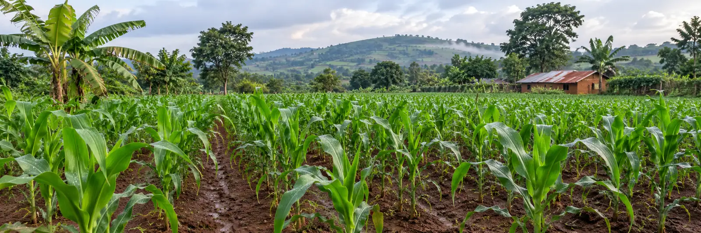

Know when the rain is coming.
Weather forecasts for farmers in Busia County, from weather stations in your own area.
Imarika in numbers
- weather stations
- areas covered
- stations that sent data recently
- forecast days
How it works
Stations measure the weather
Weather stations in your area measure rain, temperature, humidity and wind every few minutes.
We forecast the next 7 days
Imarika uses these readings to forecast rain and temperature for each of the next seven days.
Advice reaches you by web and SMS
You get plain advice about rain, planting and spraying on this website or by text message.
Our weather stations
Each dot is one weather station. The colour shows what the coming week looks like there.
Questions or feedback?
We would like to hear from farmers, extension officers and anyone else who uses Imarika.